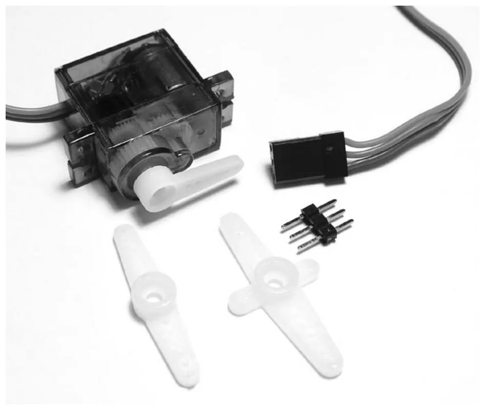
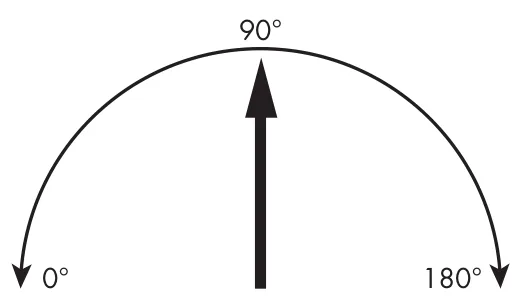

A servo (short for servomechanism) contains an electric motor that can be commanded to rotate to a specific angular position. For example, you might use a servo to control the steering of a remote control car by connecting the servo to a horn, a small arm or bar that the servo rotates. An example of a horn is one of the hands on an analog clock. Figure 12-1 shows a servo and three types of horns.

Selecting a Servo
When you’re selecting a servo, consider several parameters:
- Speed The time it takes for the servo to rotate, usually measured in seconds per angular degree.
- Rotational range The angular range through which the servo can rotate—for example, 180 degrees (half of a full rotation) or 360 degrees (one complete rotation).
- Current How much current the servo draws. When using a servo with an Arduino, you may need to use an external power supply for the servo.
- Torque The amount of force the servo can exert when rotating. The greater the torque, the heavier the item the servo can control. The torque produced is generally proportional to the amount of current used.
The servo shown in Figure 12-1 is a hexTronik HXT900. It is inexpensive and can rotate up to 180 degrees, as shown in Figure 12-2.

Connecting a Servo
It’s easy to connect a servo to an Arduino because only three wires are involved. If you’re using the HXT900, the darkest wire connects to GND, the center wire connects to 5 V, and the lightest wire (the pulse wire) connects to a digital pin. If you’re using a different servo, check its data sheet for the correct wiring.
Putting a Servo to Work
Now let’s put our servo to work. In this sketch, the servo will turn through its rotational range. Connect the servo to your Arduino as described, with the pulse wire connected to digital pin 4, and then enter and upload the sketch in Listing 12-1.
// Listing 12-1
#include <Servo.h>
Servo myservo;
void setup()
{
myservo.attach(4);
}
void loop()
{
myservo.write(180);
delay(1000);
myservo.write(90);
delay(1000);
myservo.write(0);
delay(1000);
}In this sketch, we use the servo library included with the Arduino IDE and create an instance of the servo with the following:
#include <Servo.h>
Servo myservo;Then, in void setup(), we tell the Arduino which digital pin the servo control is using:
myservo.attach(4); // control pin on digital fourNow we simply move the servo with the following:
myservo.write(x);Here, x is an integer between 0 and 180 degrees—the angular position to which the servo will be moved. When running the sketch in Listing 12-1, the servo will rotate across its maximum range, stopping at the extremes (0 degrees and 180 degrees) and at the midpoint (90 degrees). When looking at your servo, note that the 180-degree position is on the left and 0 degrees is on the right.
In addition to pushing or pulling objects, servos can also be used to communicate data similar to an analog gauge. For example, you could use a servo as an analog thermometer, as you’ll see in Project 38.